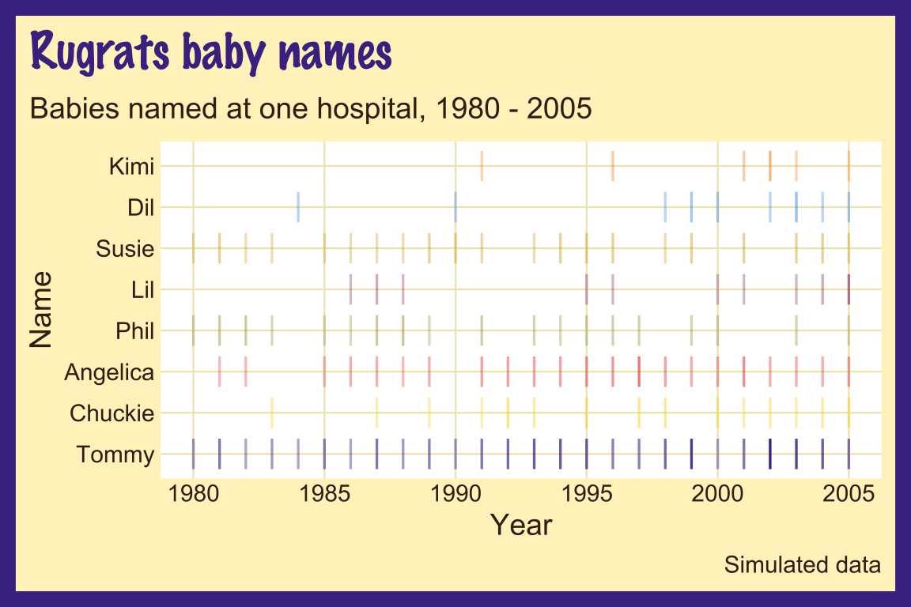
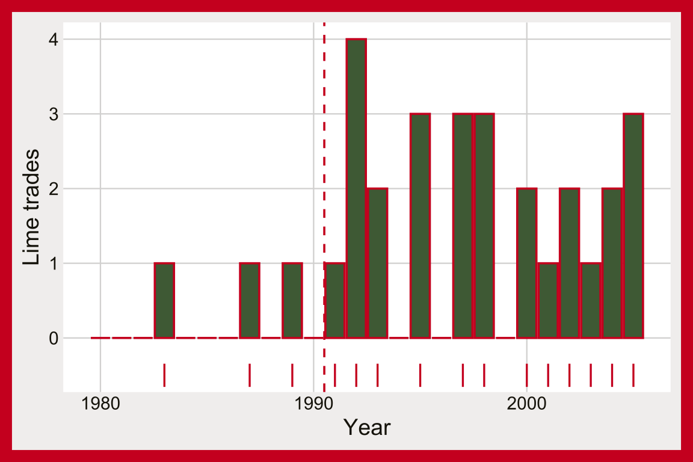
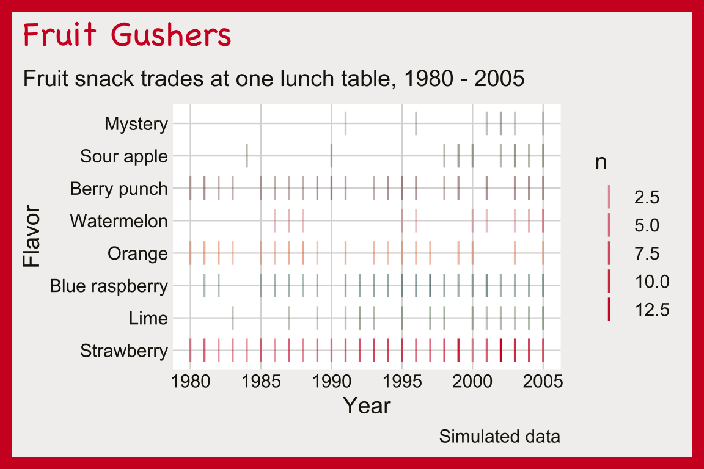
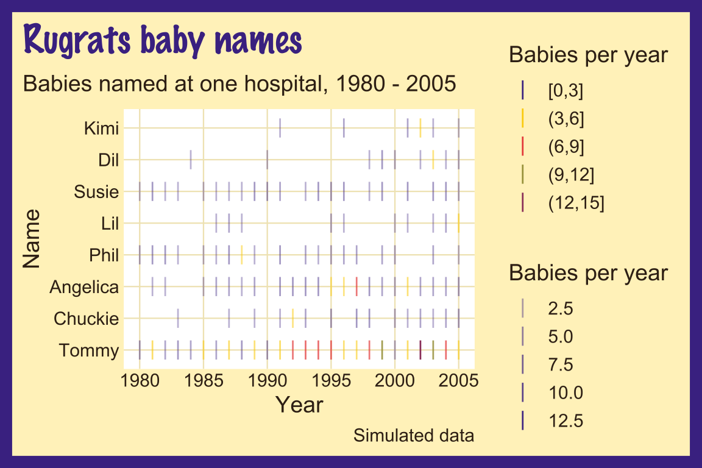
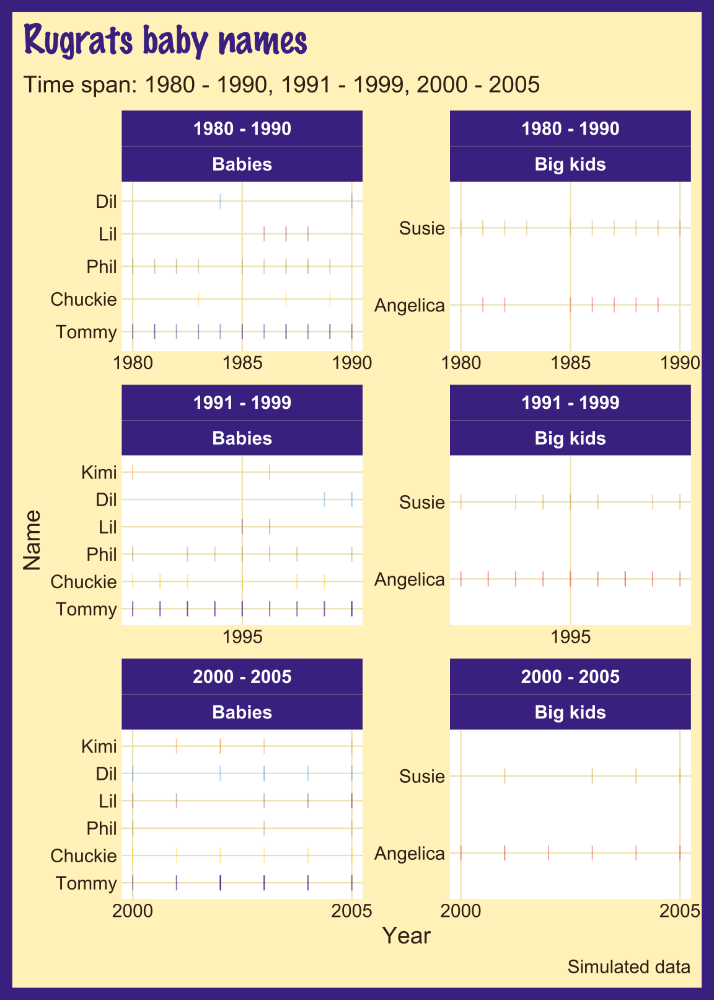

34 Instance chart
34.1 Description
An instance chart (or instance graph) displays frequencies (or ‘instances’) of different categorical values over time.
The time dimension is placed on the x and each separate categorical item is placed on the y-axis. The instances are typically represented using the vertical hashes from geom_point() (i.e., shape 124 or the ‘pipe’ "|").
Saturation and color are also used to represent different categorical levels and counts.
34.2 Set up
PACKAGES:
Install packages.
show/hide
library(ggplot2)
library(dplyr) # for data manipulation
library(tidyr) # for expand_grid()DATA:
Rugrats premiered on Nickelodeon in 1991, and a generation of parents suddenly had new ideas for baby names. We’ll simulate how many babies were given each Rugrats character’s name at one hospital every year from 1980 to 2005. Each name in rugrats_names has an average number of babies per year before the character’s debut and an average after it (Susie showed up in 1992, Dil in 1998, and Kimi in 2001). rpois() draws each year’s count (n) from the matching average. Setting the seed with set.seed() means you’ll get the same 208 name years every time you run the code below.
show/hide
rugrats_names <- tibble(
name = c("Tommy", "Chuckie", "Angelica", "Phil",
"Lil", "Susie", "Dil", "Kimi"),
before = c(4, 0.3, 1, 1.5, 0.2, 1, 0.05, 0.05),
after = c(8, 1.5, 4, 1.5, 0.8, 1.5, 2, 3),
debut = c(1991, 1991, 1991, 1991, 1991, 1992, 1998, 2001))
set.seed(1993)
hospital_names <- expand_grid(year = 1980:2005, rugrats_names) |>
mutate(name = factor(name, levels = rugrats_names$name),
avg_n = if_else(year < debut, before, after),
n = rpois(n(), lambda = avg_n)) |>
select(year, name, debut, avg_n, n)
glimpse(hospital_names)
#> Rows: 208
#> Columns: 5
#> $ year <int> 1980, 1980, 1980, 1980, 1980, 1980…
#> $ name <fct> Tommy, Chuckie, Angelica, Phil, Li…
#> $ debut <dbl> 1991, 1991, 1991, 1991, 1991, 1992…
#> $ avg_n <dbl> 4.00, 0.30, 1.00, 1.50, 0.20, 1.00…
#> $ n <int> 3, 0, 0, 2, 0, 1, 0, 0, 6, 0, 1, 3…An instance chart only shows the years a name was used, so we’ll filter out the years with no babies and store the rest in rugrats_babies.
show/hide
rugrats_babies <- hospital_names |>
filter(n > 0)
glimpse(rugrats_babies)
#> Rows: 128
#> Columns: 5
#> $ year <int> 1980, 1980, 1980, 1981, 1981, 1981…
#> $ name <fct> Tommy, Phil, Susie, Tommy, Angelic…
#> $ debut <dbl> 1991, 1991, 1992, 1991, 1991, 1991…
#> $ avg_n <dbl> 4.0, 1.5, 1.0, 4.0, 1.0, 1.5, 1.0,…
#> $ n <int> 3, 2, 1, 6, 1, 3, 3, 2, 1, 3, 1, 3…34.3 Distribution
An instance chart is built from two things: whether a name shows up in a given year (the tick), and how many times it shows up (the shading). The empty spaces between the ticks matter just as much as the ticks, and the number of empty spaces depends on how popular the name is. Below we’ll move from the counts, to a picture, to the formula.
COUNT IT:
Start with Chuckie in the five years before and after the show premiered.
show/hide
hospital_names |>
filter(name == "Chuckie", year >= 1986, year <= 1995)Before 1991, most years have no Chuckies at all. Below we count the years with zero babies (zero_years) for each name, before and after its character’s debut.
show/hide
zero_counts <- hospital_names |>
mutate(era = if_else(year < debut, "before", "after")) |>
group_by(name, era) |>
summarise(years = n(), zero_years = sum(n == 0), .groups = "drop") |>
pivot_wider(names_from = era, values_from = c(years, zero_years)) |>
select(name, years_before, zero_years_before,
years_after, zero_years_after)
zero_countsChuckie went 8 of 11 years without a baby before the show, and only 3 of 15 years after it. Tommy, the most popular name, never had a year without a baby.
DRAW IT:
The graph below draws Chuckie’s yearly counts as bars (including the zeros) and the same years as instance ticks across the bottom. Every gap in the ticks is a year with a bar of height zero.
show/hide
chuckie <- hospital_names |>
filter(name == "Chuckie")
ggplot(chuckie, aes(x = year)) +
geom_col(aes(y = n), fill = "#F7941D") +
geom_point(data = filter(chuckie, n > 0), aes(y = -0.5),
shape = 124, size = 5, color = "#7B3FA0") +
geom_vline(xintercept = 1990.5, linetype = "dashed") +
labs(x = "Year", y = "Babies named Chuckie")
NAME IT:
Each yearly count follows a Poisson distribution with the average for that name and era:
\[ n_{\text{name, year}} \sim \text{Poisson}(\lambda), \quad P(n = 0) = e^{-\lambda} \]
The chance of an empty year depends only on \(\lambda\). Before the show, Chuckie’s average is 0.3 babies a year, so \(P(n = 0) = e^{-0.3} \approx 0.74\), and we’d expect about \(11 \times 0.74 \approx 8.1\) empty years out of 11. After the show, the average jumps to 1.5, so \(P(n = 0) = e^{-1.5} \approx 0.22\) and we’d expect about 3.3 empty years out of 15. Tommy averages 8 babies a year after the show, so an empty year has a chance of \(e^{-8} \approx 0.0003\) (practically never). That’s why rare names look like scattered ticks and popular names look like solid lines. Try changing Chuckie’s after value to 5 and his row fills in.
34.4 Grammar
CODE:
Create labels with
labs()Initialize the graph with
ggplot()and providedataMap
yeartox,nametoy, andcolortonameAdd
geom_point(), mapntoalpha, and set theshapeto124andsizeto5Most years have only a few babies, so we raise the lightest
alphawithscale_alpha_continuous(range = c(0.35, 1))(otherwise the faint ticks disappear)Remove the
colorlegend withguides()(the names are already on theyaxis)
show/hide
labs_inst_rugrats <- labs(
title = "Rugrats baby names",
caption = "Simulated data",
subtitle = "Babies named at one hospital, 1980 - 2005",
x = "Year",
y = "Name")
ggp2_inst_rugrats <- ggplot(data = rugrats_babies,
mapping = aes(x = year,
y = name,
color = name)) +
geom_point(aes(alpha = n),
shape = 124,
size = 5) +
scale_alpha_continuous(range = c(0.35, 1)) +
guides(color = "none")
ggp2_inst_rugrats +
labs_inst_rugratsGRAPH:

34.5 More info
34.5.1 Saturation with cut_interval()
ggplot2 has two great functions for splitting numerical variables into intervals or widths. We’ll use cut_interval() to create an n_range variable, which splits the yearly counts (n) into intervals based on the length argument.
show/hide
rugrats_babies_range <- rugrats_babies |>
mutate(n_range = ggplot2::cut_interval(x = n, length = 3))
rugrats_babies_range |>
count(n_range)Below we can see the count ranges have been built with the interval notation: "(a,b]"
- Most of the ticks fall in the lowest range, and every count above 9 belongs to Tommy after the show premiered.
show/hide
labs_inst_rugrats_range <- labs(
title = "Rugrats baby names",
caption = "Simulated data",
subtitle = "Babies named at one hospital, 1980 - 2005",
x = "Year",
y = "Name",
color = "Babies per year",
alpha = "Babies per year")
ggp2_inst_rugrats_range <- ggplot(data = rugrats_babies_range,
mapping = aes(x = year,
y = name,
color = n_range)) +
geom_point(aes(alpha = n),
shape = 124,
size = 4) +
scale_alpha_continuous(range = c(0.35, 1))
ggp2_inst_rugrats_range +
labs_inst_rugrats_range
34.5.2 Facets with cut_number()
To demonstrate facets, we’ll create two other variables: year_range and group:
year_rangeusesggplot2::cut_number()to split theyearinto three groups with about the same number of ticks in each, then we build a label for each group from its first and last yeargroupis a factor variable with two levels:"Babies"and"Big kids"(Angelica and Susie)
show/hide
rugrats_babies_fct <- rugrats_babies |>
mutate(year_grp = ggplot2::cut_number(year, n = 3, labels = FALSE)) |>
group_by(year_grp) |>
mutate(year_range = paste(min(year), "-", max(year))) |>
ungroup() |>
mutate(
year_range = factor(year_range, levels = unique(year_range[order(year)])),
group = if_else(name %in% c("Angelica", "Susie"), "Big kids", "Babies"),
group = factor(group, levels = c("Babies", "Big kids")))Below we can see the total counts of names in the cross-table of year_range and group
show/hide
rugrats_babies_fct |>
count(year_range, group) |>
pivot_wider(names_from = group,
values_from = n)In the graph, we’ll create labels using the levels from the year_range variable.
We can also change the
shapeused ingeom_point()to the pipe operator ("|")With
scales = "free", each panel picks its ownxbreaks, so we set them every five years withscale_x_continuous()
show/hide
# create labels from factor levels
st_lbls <- paste0(
levels(rugrats_babies_fct$year_range),
collapse = ", ")
labs_inst_rugrats_facet <- labs(
title = "Rugrats baby names",
caption = "Simulated data",
subtitle = paste0("Time span: ", st_lbls),
x = "Year",
y = "Name")
ggp2_inst_rugrats_facet <- ggplot(rugrats_babies_fct,
mapping = aes(x = year,
y = name)) +
geom_point(aes(alpha = n, color = name),
shape = "|",
size = 3,
show.legend = FALSE) +
scale_x_continuous(breaks = seq(1980, 2005, by = 5)) +
scale_alpha_continuous(range = c(0.35, 1)) +
facet_wrap(year_range ~ group,
scales = "free",
ncol = 2)
ggp2_inst_rugrats_facet +
labs_inst_rugrats_facet